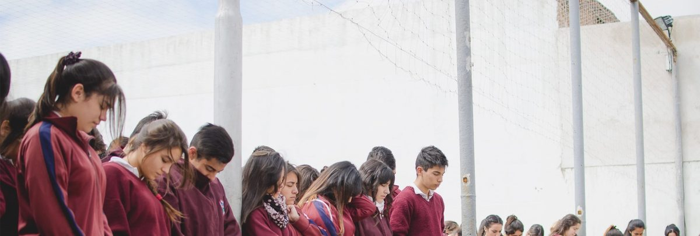
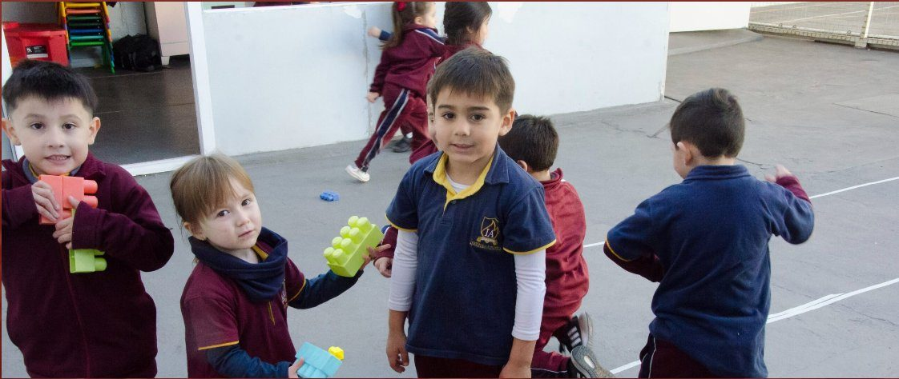
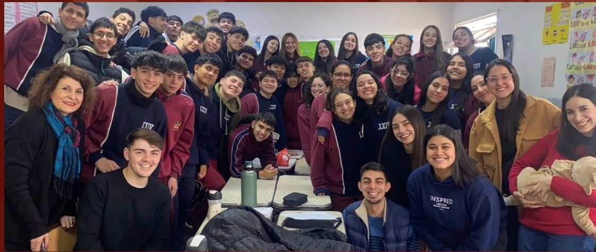
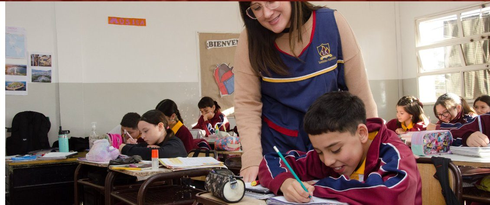
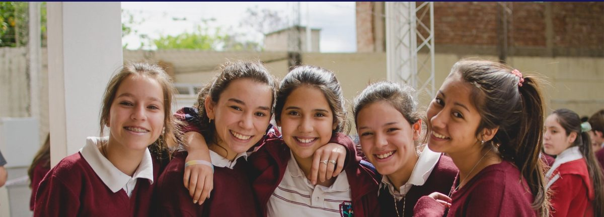
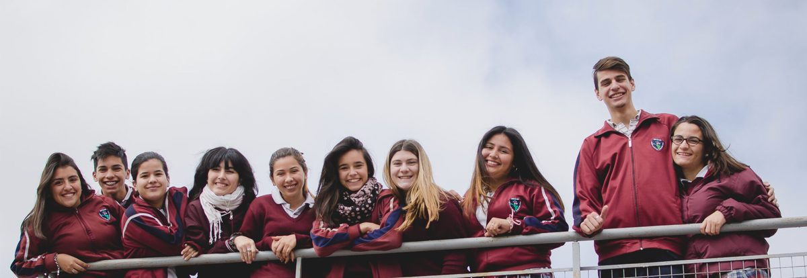

Conocé los valores, la historia y la comunidad que construimos juntos desde 1966.
Somos un colegio cristiano evangélico dedicado a la formación integral de nuestros estudiantes, combinando excelencia académica con principios y valores basados en la fe cristiana.
Nuestro objetivo es educar para la vida, desarrollando el potencial de cada alumno en un ambiente de amor, respeto y compromiso con Dios. Creemos que cada niño y joven es un ser único, con dones y talentos que merecen ser cultivados.

«Instruye al niño en su camino, y aun cuando fuere viejo no se apartará de él.» Proverbios 22:6
Somos un colegio cristiano evangélico dedicado a la formación integral de nuestros estudiantes, combinando excelencia académica con principios y valores basados en la fe cristiana. Nuestro objetivo es educar para la vida, desarrollando el potencial de cada alumno en un ambiente de amor, respeto y compromiso con Dios.
Ser una institución educativa de referencia en Córdoba, reconocida por su compromiso con la formación integral del ser humano, la excelencia académica y la vivencia de valores cristianos que transformen positivamente a cada alumno, cada familia y la sociedad en su conjunto.
Fe en Dios, amor al prójimo, honestidad, responsabilidad, respeto mutuo y excelencia en todo lo que emprendemos. Estos valores no son solo palabras: son el fundamento que guía cada decisión, cada clase y cada vínculo dentro de nuestra comunidad educativa.
Instituto América nació por iniciativa de un grupo de personas de la comunidad cristiana evangélica de Córdoba, con la convicción de que la educación basada en valores bíblicos transforma vidas y comunidades.
La institución incorporó el Nivel Secundario por iniciativa de la comunidad cristiana evangélica, ampliando la propuesta educativa y permitiendo que los alumnos completaran su trayecto escolar completo.
Con más de 1.200 alumnos en tres niveles, el Instituto América sigue fiel a su misión fundacional: educar para la vida desde la fe cristiana, formando personas íntegras comprometidas con Dios y con la sociedad.





Inscripciones 2026 abiertas para todos los niveles. Los cupos son limitados.
Consultá por inscripciones →